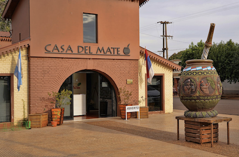
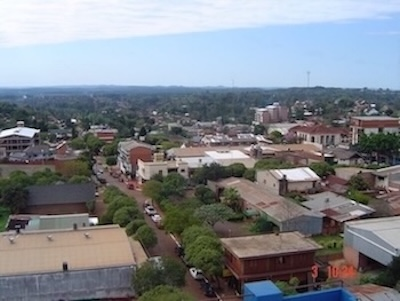

Apostóles, Misiónes
This was my first area! They are known for their yerba mate.
El Dorado, Misiónes
My fourth area in the mission! This place lies very close to Apóstoles, and has a very similiar vibe. Very hilly, green, and the same iconic red dirt.